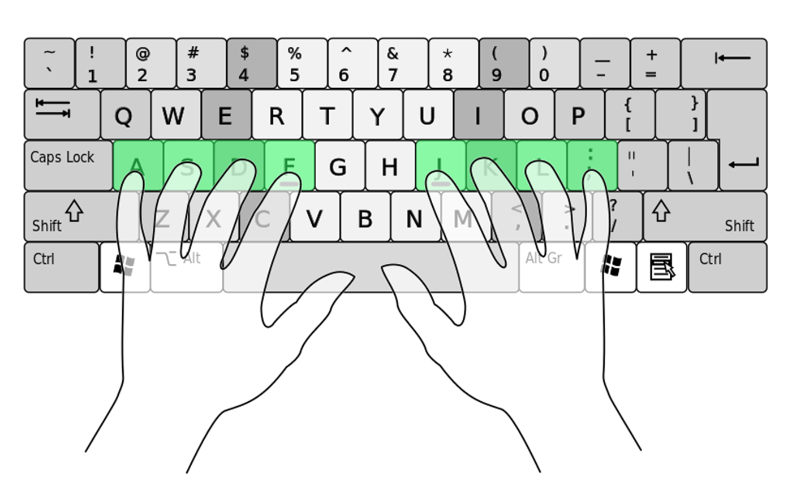

ที่มามาจาก Typing speed test (ทดสอบความเร็วในการพิมพ์)
โดยในส่วนนี้จะเป็นการฝึก typing skills(ความสามารถด้านการพิมพ์ดีด) ว่าตัวเองนั้นมีความเร็วในการพิมพ์
มากน้อยขนาดไหน โดย มีมาตรฐานการวันเป็น WPM (Word per minute)
โดยการพิมพ์ พื้นฐานเริ่มจากการวางมือบนแป้นพิมพ์(Keyboard) ตามรูปภาพด้านล่าง
ถัดมาคือนิ้วแต่ละนิ้ว มีหน้าที่กดแป้นพิมพ์ ตามพื้นที่ดังในภาพ ด้านล่าง
หลังจากนี้คือการฝึกฝนการพิมพ์ ให้คล่อง โดยเริ่มจากการฝึกพิมพ์คำง่ายๆ หรือ ประโยคง่ายๆ สั้นๆ ก่อนแล้ว
ค่อยๆเพิ่มความยาก โดยดูจากค่า WPM ว่า เราพิมพ์ได้ในความเร็วระดับไหนแล้ว
ในยุคแรกที่มีการเริ่มฝึกพิมพ์ด้วยคอมพิวเตอร์ในประเทศไทย เริ่มมีการฝึกบนระบบบฏิบัติการ DOS และมีโปรแกรมที่นิยมใช้ฝึกพิมพ์ดีดด้วยคอมพิวเตอร์ได้แก่
โปรแกรมดวงจันทร์ ซึ่งมีทั้งภาษาไทยและอังกฤษ ถ้าเป็นโปรแกรมที่ผลิตโดยชาวต่างชาติก็จะเป็น Marvis Beacon เฉพาะในภาษาอังกฤษ
ในยุคต่อมาที่การใช้โปรแกรมคอมพิวเตอร์เพิ่งเริ่มเป็นที่แพร่หลาย บริษัท คอมพิวเตอร์ เอจ เทคโนโลยี จำกัด ได้ผลิตโปรแกรมพิมพ์สัมผัส ทั้งไทย-อังกฤษ
สำหรับฝึกพิมพ์ดีดบนระบบปฏิบัติการ DOS บนแผ่นดิสก์ขนาด 5.25 นิ้ว ขึ้นมาในปี พ.ศ. 2537 ได้รับความนิยมมากเนื่องจากมีคุณภาพและมีกราฟิกสีสันสวยงาม
อีกทั้งมีเกมให้ฝึกพิมพ์อีกด้วย
และในปี พ.ศ. 2538 ก็ได้ผลิตโปรแกรมพิมพ์ไทย ที่ทำงานบน Windows 3.0 บนแผ่น 3.5 นิ้ว และยังคงได้รับความนิยมอย่างมาก ต่อมาเมื่อมีการคิดค้นแผ่นซีดีขึ้นมา
บริษัท คอมพิวเตอร์ เอจ เทคโนโลยี ก็ได้ผลิตโปรแกรมพิมพ์ 2001 ซึ่งหัดพิมพ์ได้ทั้งภาษาไทยและภาษาอังกฤษ ขึ้นในปี พ.ศ. 2539
ที่มีสมรรถนะสูงขึ้นมาอีกเพราะแผ่นซีดีมีความจุกว่าแผ่น 3.5 นิ้วมาก ทำให้มีเกมฝึกพิมพ์เพิ่มได้อีกถึง 3 เกมด้วยกัน
จากนั้นได้พัฒนาโปรแกรมสอบพิมพ์สัมผัส ขึ้นมาเพื่อใช้กับองค์กรที่ต้องการทดสอบการพิมพ์ผู้สมัครงานและพนักงานต่าง ๆ
ที่ต้องการเลื่อนขั้นในปี พ.ศ. 2542 มีองค์กรเช่น ธนาคารเพื่อการเกษตรและสหกรณ์ และบริษัทในเครือสามารถ ได้นำไปใช้
สอบพิมพ์สัมผัส สามารถสร้างโจทย์ได้เอง และสามารถตรวจและแสดงผลการสอบได้ทันที ส่วนโปรแกรมพิมพ์ 2001
ได้มีการพัฒนาเรื่อยมาและปรับมาใช้ชื่อ พิมพ์สัมผัส 2.0 ในปี พ.ศ. 2546